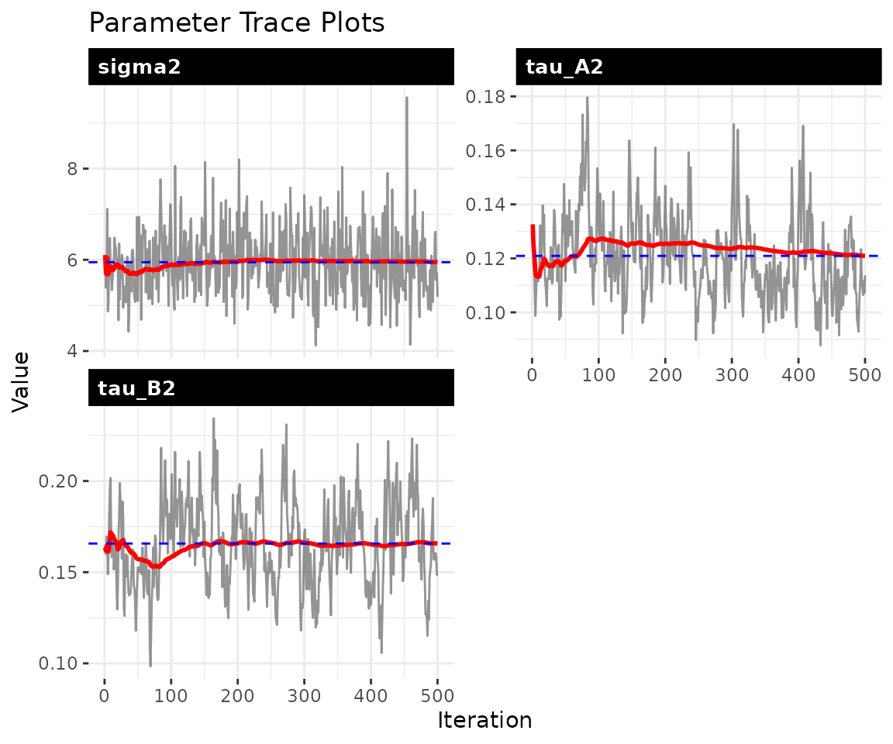
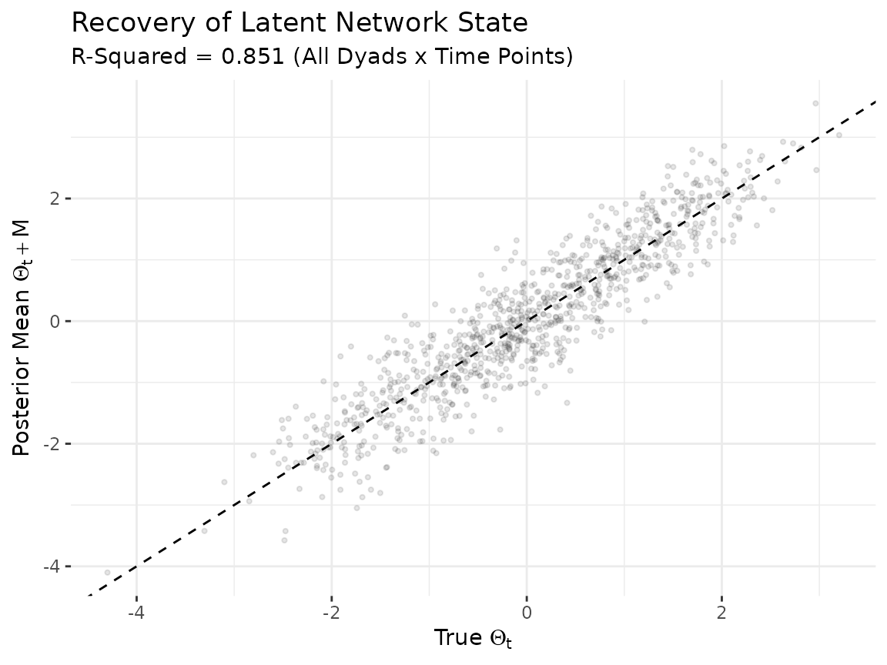

Dynamic bilinear network models
Tosin Salau & Shahryar Minhas
2026-03-28
Source:vignettes/dynamic_dbn.Rmd
dynamic_dbn.Rmd1 The model
The dynamic bilinear model allows the influence matrices and to change over time, capturing settings where the rules governing network evolution are themselves evolving:
Entry of the sender influence matrix measures how strongly actor ’s past sending behavior predicts actor ’s current sending at time . The receiver matrix captures the analogous pattern on the targeting side. The baseline mean absorbs stable dyad-specific tendencies that persist regardless of the dynamics.
Two additional parameters govern how rapidly the influence structure
reorganizes. The innovation variances
and
control step-to-step variation in
and
:
values near zero indicate a nearly static structure, while larger values
allow rapid reorganization. When ar1 = TRUE, the model adds
persistence parameters
and
that measure mean reversion. Values of
near 1 indicate that the influence structure is highly persistent;
values near 0 indicate rapid reversion to the prior mean.
2 Simulate data
We generate a Gaussian network with time-varying influence matrices.
Setting ar1 = TRUE gives the influence matrices AR(1)
dynamics, so each period’s influence structure is a noisy version of the
previous period’s rather than an uncorrelated random walk. The high
persistence
()
and small innovation variance
()
create smoothly evolving dynamics that are easier to recover from
limited data.
sim = simulate_dynamic_dbn(
n = 8,
p = 1,
time = 15,
sigma2 = 0.3,
tauA2 = 0.04,
tauB2 = 0.04,
ar1 = TRUE,
rhoA = 0.9,
rhoB = 0.9,
seed = 6886
)
Y = sim$Z
dim(Y)
#> [1] 8 8 1 153 Fit the model
We set ar1 = TRUE so the model uses AR(1) dynamics for
and
,
and update_rho = TRUE so the persistence parameters are
estimated from the data rather than fixed at a default value.
fit = dbn(
Y,
family = "gaussian",
model = "dynamic",
nscan = 1000,
burn = 500,
odens = 2,
ar1 = TRUE,
update_rho = TRUE,
verbose = FALSE
)4 Convergence diagnostics
The trace plots should show stationary chains with no drift. For the dynamic model, the key parameters are (process noise), and (innovation variances), and and (persistence).
check_convergence(fit)
#> sigma2 tau_A2 tau_B2 g2
#> 498.11527 77.69979 65.80980 392.33129
#>
#> Fraction in 1st window = 0.1
#> Fraction in 2nd window = 0.5
#>
#> sigma2 tau_A2 tau_B2 g2
#> -2.1739 0.5757 -1.2306 -0.6350
plot_trace(fit, pars = c("sigma2", "tau_A2", "tau_B2", "rho_A", "rho_B"))
5 Parameter recovery
Scalar parameters
param_summary(fit)
#> parameter mean sd q2.5 q50 q97.5
#> 1 sigma2 5.94737738 0.72658796 4.70775216 5.9317598 7.4606929
#> 2 tau_A2 0.12091809 0.01561779 0.09610393 0.1194444 0.1556927
#> 3 tau_B2 0.16572224 0.02368038 0.12372206 0.1642472 0.2142344
#> 4 g2 0.09200445 0.02070456 0.05860016 0.0891350 0.1392518
#> 5 rhoA 0.78392539 0.03691866 0.70602944 0.7861769 0.8479822
#> 6 rhoB 0.74915741 0.04180474 0.66540326 0.7519273 0.8301224
#> 7 sigma2_obs 0.91885799 0.05993262 0.80695241 0.9171687 1.0322075The model estimates variance parameters that govern the dynamics. The internal parameterization may differ in scale from the simulation inputs, so direct comparison of scalar values is not always meaningful. The most informative validation is whether the model recovers the latent network trajectories.
Latent network recovery
The model’s primary output is the latent network state . We compare the posterior mean of to the true values across all dyads and time points. Strong correlation along the diagonal indicates that the model is capturing both the cross-sectional structure and the temporal dynamics.
Theta_mean = apply(fit$Theta, 1:4, mean)
M_mean = apply(fit$M, 1:3, mean)
n_act = dim(sim$Theta)[1]
Tt = dim(sim$Theta)[4]
true_vals = numeric(0)
est_vals = numeric(0)
for (t in seq_len(Tt)) {
true_mat = sim$Theta[, , 1, t]
est_mat = Theta_mean[, , 1, t] + M_mean[, , 1]
mask = !is.na(true_mat)
true_vals = c(true_vals, true_mat[mask])
est_vals = c(est_vals, est_mat[mask])
}
df_theta = data.frame(truth = true_vals, estimate = est_vals)
r_sq = round(cor(df_theta$truth, df_theta$estimate)^2, 3)
ggplot(df_theta, aes(x = truth, y = estimate)) +
geom_abline(slope = 1, intercept = 0, linetype = "dashed") +
geom_point(alpha = 0.1, size = 0.8) +
labs(
title = "Recovery of Latent Network State",
subtitle = paste0("R-Squared = ", r_sq, " (All Dyads x Time Points)"),
x = expression("True " * Theta[t]),
y = expression("Posterior Mean " * Theta[t] + M)
) +
theme_bw() +
theme(panel.border = element_blank())
Each point represents one off-diagonal dyad at one time point. Some scatter is expected due to posterior shrinkage and estimation uncertainty, but the bulk of points should cluster along the diagonal.
6 Dyad trajectories
The dyad_path() function tracks how a specific bilateral
relationship evolves over time, with a ribbon showing the posterior
credible interval. Wider ribbons indicate greater uncertainty about the
trajectory of that particular relationship.
dyad_path(fit, i = 1, j = 2)
7 Forecasting
We generate forecasts 5 steps ahead by propagating the estimated
dynamics forward. Each of the 200 posterior draws produces a different
forecast trajectory (reflecting uncertainty in
,
,
and
),
and summary = "mean" averages across them.
The resulting array has dimensions
[actors, actors, relations, horizon]. These forecasts
assume the final-period dynamics continue unchanged, so they are most
informative over short horizons.
8 Network statistics over time
The network_summary() function tracks a network-level
statistic across time with posterior credible intervals, providing a
macro-level view of how the network evolves.
ns = network_summary(fit, stat = "density")
head(ns)
#> time mean lower upper
#> 1 1 0.4633571 0.3750000 0.5535714
#> 2 2 0.4594286 0.3928571 0.5357143
#> 3 3 0.4991071 0.4285714 0.5714286
#> 4 4 0.4861786 0.4107143 0.5714286
#> 5 5 0.4926786 0.4107143 0.5714286
#> 6 6 0.4603929 0.3750000 0.5357143The edge_prob() function computes the posterior
probability that each edge is positive at a given time point. Values
near 1 indicate reliably positive edges; values near 0.5 indicate
substantial uncertainty about the sign.
9 Bipartite networks
The package automatically detects bipartite networks when the sender
and receiver dimensions differ. Passing a rectangular array causes the
model to estimate
as n_row x n_row (sender dynamics) and
as n_col x n_col (receiver dynamics).
sim_bp = simulate_dynamic_dbn(
n = 8, n_col = 6, p = 1, time = 12, seed = 6886
)
fit_bp = dbn(
sim_bp$Z,
model = "dynamic",
family = "gaussian",
nscan = 1000,
burn = 500,
odens = 2,
verbose = FALSE
)
summary(fit_bp)10 Parallel computation
The dynamic model parallelizes row-wise FFBS updates via OpenMP. For networks with 15 or more actors, multi-threading produces meaningful speedups (typically 2-4x with 4-8 cores).
set_dbn_threads(parallel::detectCores(logical = FALSE))11 Scaling guidance
For larger networks, the main constraint is RAM. Use
estimate_memory() before fitting, and adjust
time_thin and odens to manage memory.
estimate_memory(
n_row = 50, n_col = 50, p = 1, Tt = 30,
nscan = 1000, burn = 500, odens = 2,
time_thin = 2, family = "gaussian"
)
#> Dynamic DBN memory estimate:
#> Network: 50 x 50, 1 relation(s), 30 time points
#> MCMC: 500 draws (nscan=1000, odens=2)
#> Time thin: 2 (keeping 15 of 30 time points)
#> --------------------------------
#> Theta: 0.14 GB
#> A: 0.14 GB
#> B: 0.14 GB
#> M: 0.01 GB
#> --------------------------------
#> TOTAL: 0.43 GBFor 100+ actors, expect to need 16-32 GB depending on settings.
Increasing time_thin and odens are the most
effective ways to reduce memory usage.
12 Next steps
For impulse response analysis that traces how shocks propagate
through the estimated dynamics, see
vignette("impulse_response"). For models with known
structural breaks where the influence structure shifts at discrete time
points, see vignette("piecewise_dbn"). For large networks
(50+ actors), see vignette("lowrank_dbn").